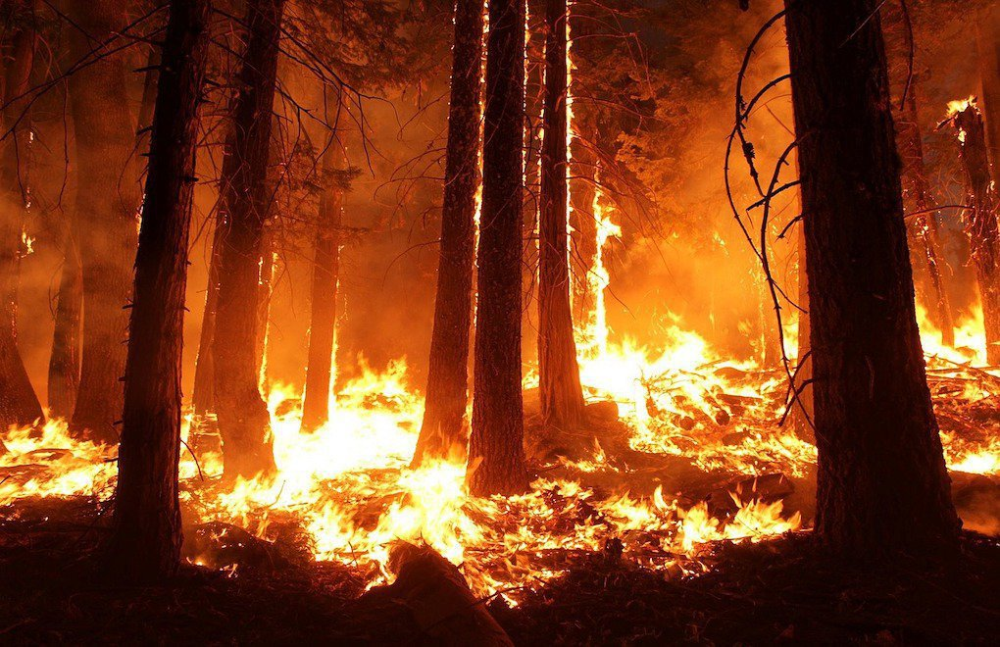

Yangın Afeti Nedir?

Yangın, kontrolsüz bir şekilde yayılan ateşin çevresindeki tüm canlılara ve eşyalarına zarar vermesi durumudur. Evlerde, ormanlarda, işyerlerinde veya doğal alanlarda yangınlar meydana gelebilir ve büyük zararlara yol açabilir.
📌 Yangınlar, genellikle elektriksel arızalar, yıldırım düşmesi, insanların dikkatsizliği ve doğal afetler sonucu çıkabilir.
Yangın Öncesinde Ne Yapmalıyım?
Yangın öncesi yapılacak hazırlıklar, can güvenliğini sağlamak ve yangının etkilerini azaltmak için çok önemlidir:
Alınması Gereken Önlemler:
- Acil durum planı hazırlayın: Yangın anında yapılacakları belirleyin, bir yangın tatbikatı yapın.
- Yangın söndürme ekipmanları edinin: Evde yangın söndürücü bulundurun, yangın merdiveni ve çıkış noktalarınızı kontrol edin.
- Elektrik sistemlerini kontrol edin: Elektrik sistemini düzenli olarak kontrol ettirerek, kısa devre riskini en aza indirin.
- Aile bireylerinizi bilgilendirin: Yangın durumunda her bireyin ne yapması gerektiğini öğrenmesini sağlayın.
- Yangın tahliye yollarını belirleyin: Evde yangın tahliye yollarını ve çıkış noktalarını önceden belirleyin.
Yangın Anında Ne Yapmalıyım?
Yangın anında panik yapmadan ve doğru adımları izleyerek, can güvenliğini sağlamak çok önemlidir:
Yangın Anında Yapmanız Gerekenler:
- İçerideyseniz: Yangın var ise hemen evden dışarı çıkın, kapıları kapalı bırakın, yangından uzaklaşın.
- Yangın merdivenini kullanın: Yangın durumunda asansör kullanmayın. En yakın yangın merdivenini kullanarak binayı terk edin.
- Yangını söndürmeye çalışmayın: Yangın çok büyükse, itfaiyeye haber verin ve binayı terk edin.
- Odadaki dumanı engellemek için: Kapı altını bezle kapatın ve yavaşça odadan çıkın.
Yangın Sonrasında Ne Yapmalıyım?
Yangın sonrasında, hem psikolojik hem de fiziksel olarak sağlığınızı korumak önemlidir:
Yangın Sonrası Yapmanız Gerekenler:
- Panik yapmayın: Sakin kalın ve yangın sonrası yapılması gerekenleri doğru şekilde yerine getirin.
- Yangın alanından uzaklaşın: Yangın sonrasında hala duman ya da tehlike olabilir. Güvenli bir alana gidin.
- Yaralıları kontrol edin: Eğer birisi yaralanmışsa, ilk yardım uygulayın ve hastaneye sevk edin.
- Yetkililere haber verin: Yangın sonrası durum hakkında yerel yetkililere bilgi verin.
Afetzedeler İçin Öneriler
Yangın sonrası, afetzedelerin güvenliği ve sağlığı için yapılması gereken bazı önemli adımlar şunlardır:
Yangın Sonrası Afetzedeler İçin Öneriler:
- Yaralıysanız: Yardım talep edin veya acil servise başvurun.
- Psikolojik destek alın: Yangın sonrasında stres, korku ve travma normaldir. Bir psikolog veya danışman ile görüşebilirsiniz.
- Yaralıları taşımak için yardım isteyin: En yakın acil yardım hattına ulaşın.
- En yakın toplanma alanına gidin: Yangın sonrasında, güvenli alana geçmek için en yakın toplanma alanına gidin.
Yardım Almak İçin:
- Yardım Talep Formu sayfasını doldurun.
- Toplanma Alanları Alanları sayfasından en yakın toplanma alanını öğrenin.
- Acil durumlarda yardım hatlarına başvurun ve en yakın yerel yetkililere ulaşın.